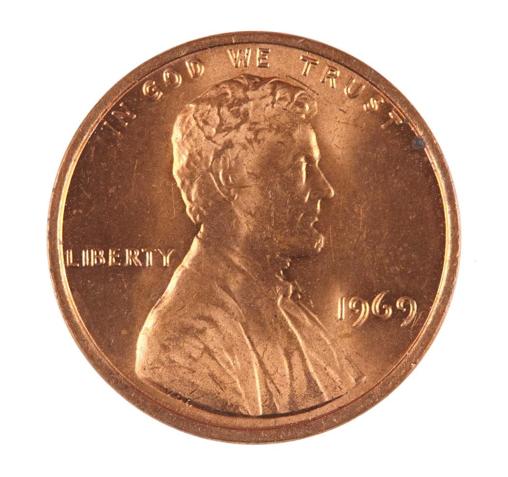
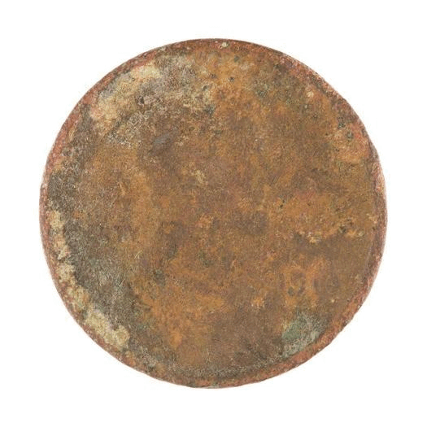
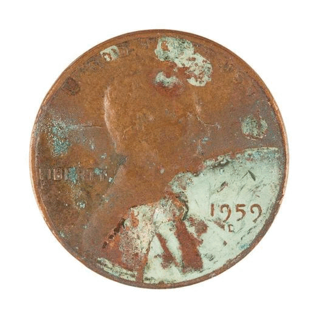
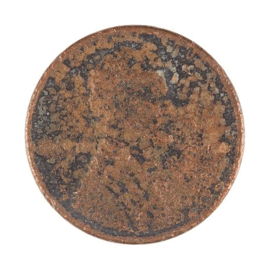
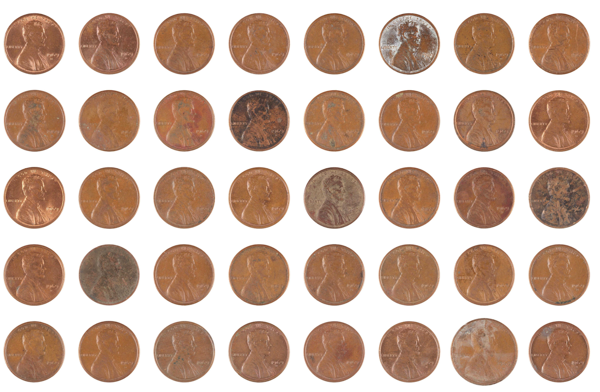
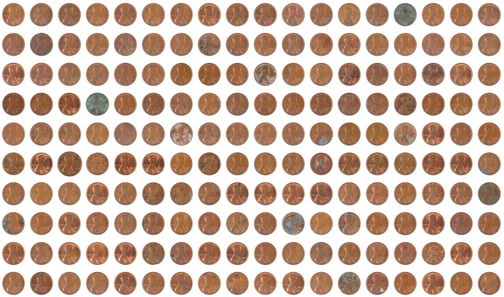
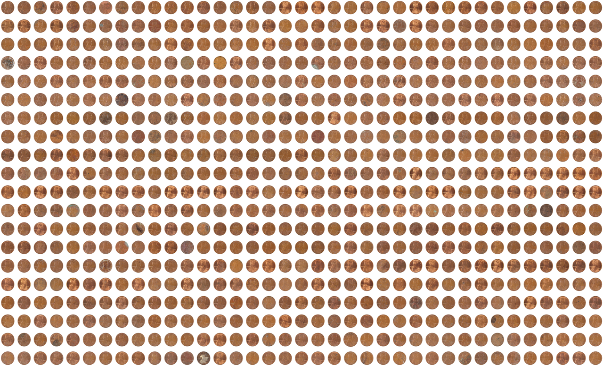
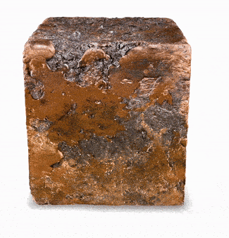

CENTS · Rutherford Chang · Project description

CENTS examines value through the lens of the copper penny. After over a century in circulation the lowly denomination has become so commonplace that it is considered a worthless nuisance. Yet a penny from any given year will always be worth exactly 1¢, according to the United States Treasury. Furthermore, those minted in 1982 and before were struck in copper and now have a metal value of approximately 3.1¢. Recognizing these discrepancies in value, Rutherford Chang removed 10,000 copper cents from circulation and archivally documented them.
With approximately 288 billion Lincoln pennies in existence, the portrait of Abraham Lincoln on the cent’s obverse is the most reproduced piece of art on Earth. The course of history has endowed each of these metal discs with unique characteristics, which are now encoded as digital artifacts. Images of these 10,000 individuals are inscribed as ordinals on 10,000 satoshis, the smallest units of Bitcoin, while the physical coins are smelted and cast into a solid 69-pound copper block.



Each disc carries its own century of handling — abrasion, discolouration, the particular way it left circulation.




an inscription of the copper block
This metal block is rendered as a three-dimensional digital model and in turn inscribed as a 4-megabyte ordinal, comprising the entirety of Bitcoin block #839969. Equivalent to casting a copper ingot so heavy and dense that it is indestructible, inscribing this data on the fundamental structure of the blockchain forms an immutable digital monument. As the traditional penny fades into irrelevance and its production is ultimately terminated, its value can continue to be redefined through this digitally scarce set of 10,000 and the block that encapsulates their transformation.
Back to CENTS ↗Trait Explorer ↗
Rutherford Chang, CENTS, 2017–2024. 10,000 copper cents removed from circulation, documented, and inscribed as ordinals on 10,000 satoshis; the coins smelted into a 69-pound copper block, itself inscribed as the entirety of Bitcoin block #839969.